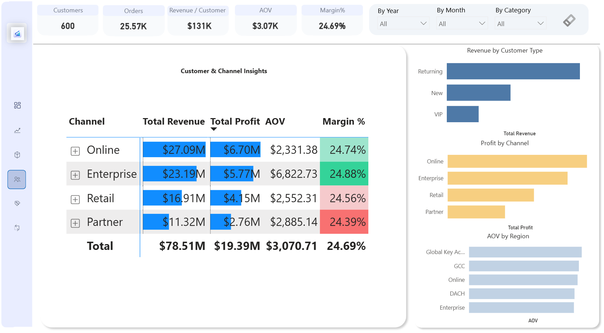
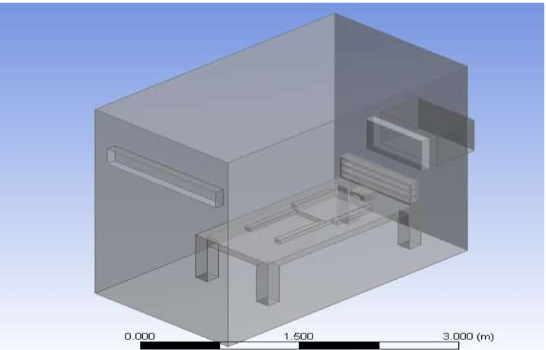

Badangi Abhinay
Business-Focused Data Analyst
Solving business problems using analytics that leaders can trust.
Boardroom Business Intelligence Dashboard
A 6-page executive analytics solution covering profitability, product intelligence, customer-channel performance, promotion effectiveness, and returns risk.



Live Dashboard
Research & Publication

Controlling Virus Droplet Diffusion in an Isolated Room Using CFD
This research focuses on analyzing the spread of airborne virus droplets within an isolated room using Computational Fluid Dynamics (CFD).
The study simulates airflow patterns, ventilation positioning, and droplet behavior to understand how airborne transmission can be minimized in controlled environments.
By optimizing air inlet and outlet placement and maintaining negative pressure conditions, the research demonstrates how virus propagation can be effectively restricted within confined spaces.
Published in IOP Conference Series, this work reflects my ability to:
- Apply analytical modeling to real-world problems
- Work with simulation-based data analysis
- Translate complex technical concepts into actionable insights
Why this matters:
- Demonstrates structured problem-solving beyond dashboards
- Shows ability to analyze systems and optimize outcomes
- Highlights strong analytical thinking and technical depth